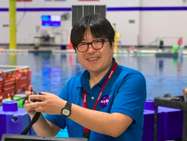

SPOC is a collaboration between NASA JSC and academic partners to study the physical and operation requirements for extravehicular activity (EVA) operations on planetary surfaces.
Team

Matthew Miller
Dr. Miller has 6 years of experience working with certified EVA flight controllers in Houston, Texas where he has gained operational insight and knowledge of the operational constraints of conducting human EVA, based on direct observation and interaction with subject-matter-experts. His research specifically focuses on advancing present-day tools, technologies and techniques to make them applicable for future deep-space EVA exploration as the EVA Operations System (EVA Mission System Software) product manager. He currently resides with JSC-XI and collaborates extensively with JSC-SK and other JSC/Ames/Goddard teams.
Leia Stirling
Leia Stirling is an Associate Professor in Industrial and Operations Engineering at the University of Michigan, a Core Faculty in the Center for Ergonomics, and an Affiliate Faculty in the Robotics Institute. Her research quantifies human performance and human-machine fluency to assess performance augmentation, advance exoskeleton control algorithms, mitigate injury risk, and provide relevant feedback to subject matter experts across domains. She received her B.S. (2003) and M.S. (2005) in Aeronautical and Astronautical Engineering from the University of Illinois at Urbana-Champaign, and her Ph.D. (2008) in Aeronautics and Astronautics from MIT. She was a postdoctoral researcher at Boston Children’s Hospital and Harvard Medical School (2008-2009), on the Advanced Technology Team at the Wyss Institute for Biologically Inspired Engineering (2009-2012), then an Assistant Professor at MIT (2013 – 2019). She joined the faculty at the University of Michigan in 2019.

KJ Kim
Dr. Kim is a Human Performance Data Engineer, working for the H-3PO Laboratory at NASA Johnson Space Center. Dr. Kim performs research and provide operational expertise in several technical areas, including Exercise Physiology & Performance and Space Suits & Exploration Operations, to assess health and performance for astronauts on the International Space Station and for future human exploration missions. As a member of the Data & Software Team, he provides data analysis and software engineering support for tasks outlined in the Integrated Extravehicular Activity Human Research Plan and the Exercise and Performance Strategic Roadmap.
Cameron Pittman
Cameron Pittman is a human spaceflight software engineer and researcher at Johnson Space Center (JSC) under the Exploration, Integration and Science Directorate. He designs and develops decision support systems to augment the safety and efficiency of EVA crew and operators. His past work includes the decision support systems used by astronauts and scientists at BASALT Hawaii 2016, NEEMO 22, NEEMO 23, and various VR EVA analogs on-site at JSC. Cameron's technical areas of expertise include web-based platform development, autonomy and decision making algorithms, cloud networking, and general Linux hacking. In his spare-time, Cameron is studying AI at MIT. He holds a masters in teaching (2011) from Belmont University and a bachelors in physics (2009) from Vanderbilt University.
Publications